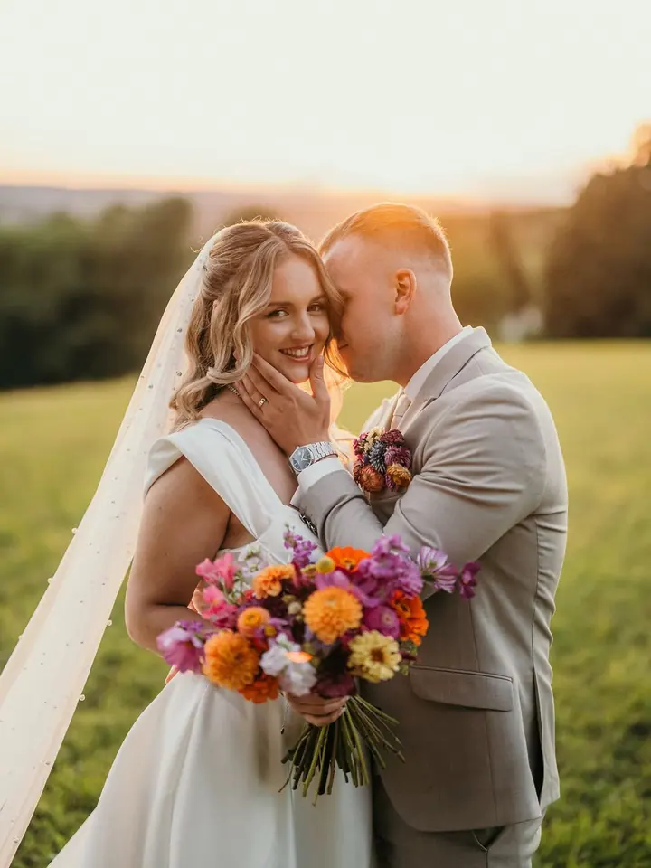
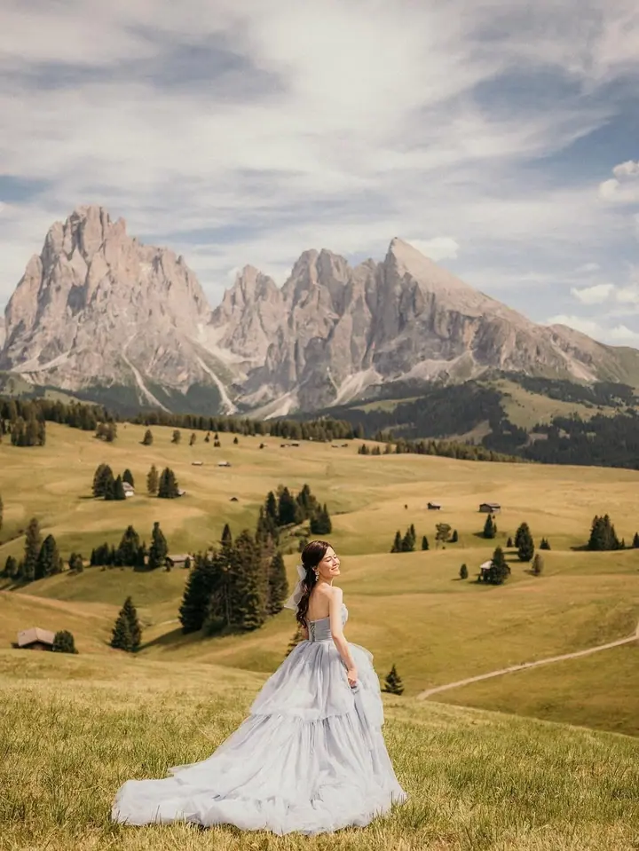
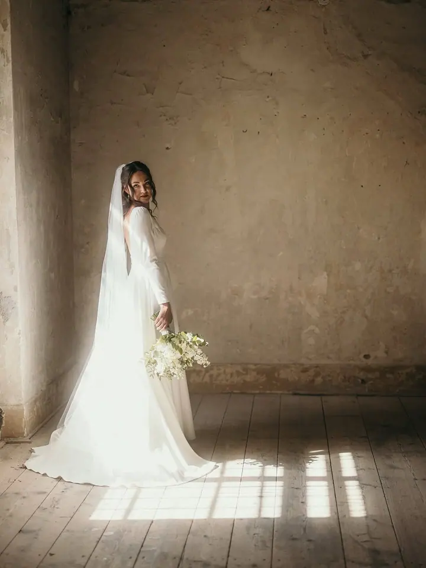

jedna
Svatební focení
Jsem s vámi od začátku až do konce, podle vašich přání a představ, a neodjíždím dřív než po 12 až 15 hodinách. Kompletní soubor 300 až 400 fotografií posílám do měsíce od svatby.

Svatební, rodinný a psí fotograf · Náchod, celá ČR

Jmenuji se Martin Brousek a z Náchoda vyrážím po celé republice fotit svatby, rodiny a psy. Pro originální fotku s vámi půjdu klidně přes hory, řeky, bahno nebo sníh. Focení se mnou je spíš procházka než pózování před objektivem.
Více o mně
Co fotím
jedna
Jsem s vámi od začátku až do konce, podle vašich přání a představ, a neodjíždím dřív než po 12 až 15 hodinách. Kompletní soubor 300 až 400 fotografií posílám do měsíce od svatby.
dvě
Jde mi hlavně o rodinnou atmosféru, která vystihuje vaše jedinečné pouto. Je to čas na smích, objetí a připomenutí si, jak moc vám na sobě záleží.
tři
Focení pejsků je pro mě srdcová záležitost. Psí portrét v přírodě, běžná procházka, štěňata nebo propagační fotky chovných psů.
Procházka v přírodě, při které zachytím důvěrné pohledy a chvíle jen pro vás dva. Klidně za východu slunce na Sněžce nebo v polích fialových máků.
Nejhezčí fotky vznikají až na úplném konci
Za objektivem
Fotografování je můj koníček od raného mládí. Dnes se věnuji hlavně lidem a zvířatům: nejčastěji svatbám a rodinám, k tomu párovým fotkám a portrétům. Nemalou kapitolou jsou pro mě psi, za kterými několikrát do roka jezdím i na výstavy po celé České republice.
Rád hledám místa a světlo, které fotkám dodají něco navíc. Ať jde o východ slunce na Sněžce, rozkvetlé magnolie, růžové sakury nebo polštáře vřesu, poradím vám, kdy a kam vyrazit. Fotím proto brzy ráno nebo pozdě odpoledne, kdy světlo nedělá ostré stíny.
Na focení si dávám čas. Většinou se neznáme, a aby fotky byly uvolněné a přirozené, nestačí půlhodina ani dospělým, natož dětem nebo pejskům. Z vlastní zkušenosti vím, že nejhezčí snímky často vznikají až na úplném konci.
Martin
Napíšete mi a já vám ověřím dostupnost. Po potvrzení pošlu fakturu na rezervaci a po jejím uhrazení je termín závazně váš.
U svatby vyplníte krátký dotazník a zhruba měsíc předem se sejdeme osobně nebo online. U ostatních focení spolu vybereme lokalitu, kde se dají střídat scenérie.
Běžné focení trvá kolem 90 až 120 minut, ideálně ráno nebo pozdě odpoledne. Na svatbu přijíždím s předstihem a zůstávám tak dlouho, jak je potřeba.
Fotky k úpravě vybírám a ladím já. Po svatbě pošlu do druhého dne ochutnávku a kompletní soubor dorazí do měsíce přes online úschovnu.
Portfolio
Otázky
Nejlepších výsledků dosáhneme za zhruba 90 až 120 minut. Na svatbě jsem s vámi minimálně 12 až 15 hodin, podle zvoleného balíčku.
Počet není nikdy striktně daný, číslo v ceníku je většinou nejmenší garantované. Ze svatby posílám 300 až 400 upravených fotografií.
Rodinné focení začíná na 2 500 Kč a svatební balíčky na 24 000 Kč. Přesné ceny najdete v ceníku, a když vám žádný balíček nesedí, domluvíme se individuálně.
Ano, fotím po celé ČR. Doprava se účtuje individuálně podle místa, u svatebního balíčku All Inclusive je po celé ČR v ceně.
Napište pár vět o tom, co si představujete. martin.brousek@gmail.com